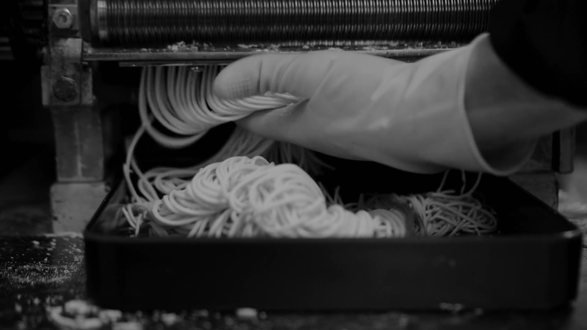

OUR STORY · SINCE 1977
1977년 전주 한옥마을에서 시작한 베테랑.
시간이 쌓여 익숙해진 일도 소홀히 넘기지 않으려 합니다.

FROM OUR KITCHEN
문밖으로는 사람들이 오가고, 주방에서는 면을 뽑습니다. 끓는 물을 살피고 그릇을 챙기다 보면 어느새 점심시간입니다.
처음 오신 분도, 오랜만에 다시 오신 분도 각자의 하루 중에 잠깐 이곳에 들렀다 갑니다. 어떤 하루를 보내고 계시든, 오늘 한 끼는 맛있게 드셨으면 합니다.
가까운 베테랑 만나기 →
JEONJU, SINCE 1977